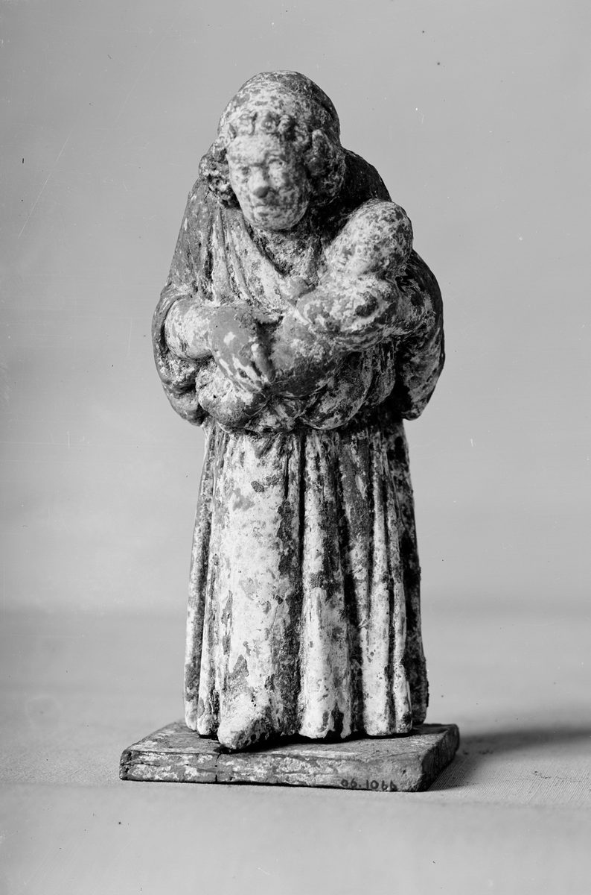

1 Thessalonians 2 — The Mister Translation

⚠ A Greek household’s trophos, the nurse who fed and raised its children, a figure familiar enough to be modelled in clay. ‘We became gentle among you, as a nursing mother cherishes her own children’ (verse 7).

Translator’s Notes
“Our entrance among you, that it has not been empty … treated outrageously at Philippi.” The “entrance” is the word of 1 Thessalonians 1:9, “what sort of entrance we had among you,” and this chapter tells what sort it was, as 1:5 promised. At Philippi Paul and Silas were stripped, beaten with rods and put in the stocks (Acts 16:22); hybrizō is “treat outrageously,” as at Acts 14:5. “Struggle” is agōn, the contest of Philippians 1:30, “the same struggle you saw in me.” The KJV reads “with much contention”; the ASV reads “in much conflict”; the NWT 1984 reads “with a great deal of struggling.”
“Approved by God to be entrusted with the gospel … not as pleasing men but God, who tests our hearts.” “Approved” and “tests” are one verb, dokimazō, to test and so to approve: God tested them before he trusted them, and goes on testing. “Pleasing men” is the phrase of Galatians 1:10, “If I were still pleasing men, I would not be a slave of Christ.” Readers divide over why verses 1–12 deny so much, error, impurity, deceit, flattery, greed: Paul may be answering charges made in Thessalonica, or, as Abraham Malherbe argued (“Gentle as a Nurse,” 1970), using the language in which moralists of the day set the true philosopher against the wandering charlatan, with no accuser in view. The KJV reads “as we were allowed of God to be put in trust with the gospel”; the NWT 1984 reads “we have been proved by God as fit to be entrusted with the good news”; the NIV reads “approved by God to be entrusted with the gospel.”
“A word of flattery … a pretext for greed — God is witness.” Kolakeia, “flattery,” stands in one verse of the New Testament (dictionary). Prophasis is a pretext, the show put up in front of the real motive; pleonexia is the “greed” of Colossians 3:5 (dictionary). “God is witness” is the oath of Romans 1:9. The KJV reads “neither at any time used we flattering words, as ye know, nor a cloke of covetousness”; the NIV reads “nor did we put on a mask to cover up greed”; the NWT 1984 reads “a false front for covetousness.”
“Though we could have been a burden as apostles of Christ.” En barei einai is “to be in weight”: to be a weight on someone, a cost to be carried, or to carry weight, to stand on one’s dignity. The money sense returns in v9, “so as not to be a burden,” from the same root, and Paul makes the same point at 2 Corinthians 11:9, “I kept myself from being a burden to you.” The Byzantine text and the KJV print these words at the end of v6; the edition this translation follows begins v7 with them. The KJV reads “when we might have been burdensome, as the apostles of Christ”; the ASV reads “when we might have claimed authority as apostles of Christ”; the NWT 1984 reads “though we could be an expensive burden as apostles of Christ.”
⚠ “We became gentle among you” — or “infants”? The copies differ by one letter. Êpioi, “gentle,” stands in two verses: this one, on the reading followed here, and 2 Timothy 2:24, “the Lord’s slave must not quarrel, but be gentle toward all” (dictionary). The oldest copies, a third-century papyrus (P65), the first hand of Codex Sinaiticus and Codex Vaticanus, read nēpioi, “infants” (dictionary); later correctors, Codex Alexandrinus and the Byzantine text read ēpioi. The word before ends in n, so a copyist could easily double it or drop it. Westcott–Hort and Nestle–Aland print “infants”; the edition this translation follows, Tregelles, Merk and Robinson–Pierpont print “gentle.” Readers who prefer “infants” hold that the harder reading is the one a copyist would change; readers who prefer “gentle” point to the nursing mother that follows. This page sets out both and does not choose. The KJV reads “But we were gentle among you”; the NIV reads “Instead, we were like young children among you”; the Douay reads “but we became little ones in the midst of you,” with the Latin parvuli.
“As a nursing mother cherishes her own children … our own lives.” Trophos is the woman who feeds a child at the breast, often a hired nurse; it stands in one verse of the New Testament (dictionary), and “her own children” makes her a mother nursing her own. Thalpō, “cherish,” to keep warm, stands in two verses: Ephesians 5:29, “he nourishes and cherishes it,” and this one. Homeiromai, “longing for,” stands in one verse (dictionary). “Lives” is psychas, “souls”: they gave themselves along with the message (dictionary). Paul is a nursing mother here and a father in v11, as he is a mother “in labor” at Galatians 4:19. The KJV reads “even as a nurse cherisheth her children”; the NWT 1984 reads “as when a nursing mother cherishes her own children”; the TLB reads “as gentle among you as a mother feeding and caring for her own children.”
“Our labor and hardship: working night and day so as not to be a burden to any of you.” Mochthos, “hardship,” stands in three verses, each time paired with kopos, “labor”: 2 Corinthians 11:27, “in labor and hardship,” this one, and 2 Thessalonians 3:8, which repeats “night and day … so as not to be a burden to any of you” almost word for word. Kopos is the “labour of love” of 1:3. Acts says Paul was a tentmaker by trade (Acts 18:3). The Philippians also sent him help “even in Thessalonica … both once and twice” (Philippians 4:16): he worked, and he received gifts. The KJV reads “our labour and travail: for labouring night and day, because we would not be chargeable unto any of you”; the NIV reads “our toil and hardship.”
“Like a father with his own children, we dealt with each one of you.” The Greek of v11 has no verb of its own; “we dealt with” is supplied, and the participles of v12 carry the sense. Where v7 had a mother, here is a father, who exhorts, encourages and charges. Hosiōs, “devoutly,” is the adverb of hosios (dictionary). The ASV reads “how we dealt with each one of you, as a father with his own children”; the KJV reads “how we exhorted and comforted and charged every one of you, as a father doth his children,” moving the verbs of v12 into v11.
“To walk worthily of God, who calls you into his own kingdom and glory.” “Walk worthily” as at Ephesians 4:1 and Colossians 1:10. “Calls” is a present participle, the call still sounding; “exhorting” is the verb of the “exhortation” of v3 (dictionary). The KJV reads “who hath called you unto his kingdom and glory”; the ASV reads “who calleth you into his own kingdom and glory”; the NWT 1984 reads “who is calling YOU to his kingdom and glory.”
“You accepted it not as a word of men but as what it truly is, the word of God, which is also at work in you.” “Received” and “accepted” are two verbs: the first for taking over what is handed on, as at 1 Corinthians 15:3, the second for welcoming it, the verb of 1:6. “At work” is energeitai, as at Colossians 1:29, “his working, which works in me.” The KJV reads “which effectually worketh also in you that believe”; the NIV reads “which is indeed at work in you who believe.”
“Imitators of the congregations of God that are in Judea … from your own fellow countrymen.” The chain of imitation of 1:6 now reaches the congregations of Judea, the first to suffer (encyclopedia). Symphyletēs, “fellow countryman,” a member of the same tribe or people, stands in one verse (dictionary). At Acts 17:5 the trouble in Thessalonica begins with “the Jews” of the city and a mob of the marketplace; here the Thessalonians’ persecutors are their own countrymen, which readers take to mean their Gentile neighbors, or the city as a whole. The KJV reads “ye also have suffered like things of your own countrymen, even as they have of the Jews”; the NWT 1984 reads “YOU also began suffering at the hands of YOUR own countrymen”; the TLB reads “just as they suffered from their own people, the Jews.”
⚠ How these verses have been used. For centuries Christians called the Jewish people as a whole the killers of Christ. The charge is in Melito of Sardis, about 170, “God has been murdered,” and it was repeated in preaching, in law and in violence against Jews into the twentieth century; this sentence, the one place in Paul’s letters that says “the Jews … killed the Lord Jesus,” was read as scripture’s support for it. In 1965 the Second Vatican Council, in the declaration Nostra Aetate, rejected the charge: what happened in his passion “cannot be charged against all the Jews, without distinction, then alive, nor against the Jews of today.” That use is part of the record. It is not what the sentence says. The writer is a Jew, “of the race of Israel, of the tribe of Benjamin” (Philippians 3:5); the congregations he holds up as the model are Jewish congregations in Judea, suffering from their own countrymen just as the Thessalonians suffer from theirs; and the same writer will say that he could wish himself accursed for his own people (Romans 9:3) and that “all Israel will be saved” (Romans 11:26).
⚠ “From the Jews who killed both the Lord Jesus and the prophets.” The manuscripts have no punctuation, and the readings divide. With a comma after “the Jews,” the clause describes the Jews in general; without one, it marks out those Jews who killed Jesus, persecuted the congregations of Judea and drove Paul out. Frank Gilliard argued for the second in 1989 (“The Problem of the Antisemitic Comma”); others hold that the first is the natural reading of the Greek. The edition this translation follows prints no comma there, and neither does this translation; Robinson–Pierpont prints one. Ioudaioi can also be read as “Judeans,” the people of the region just named. In 1971 Birger Pearson argued that verses 13–16 were added after the fall of Jerusalem in 70; others answer that every surviving manuscript has them and that persecution in Judea before 70 is attested. Killing the prophets is the charge of the prophets’ own tradition: Elijah’s complaint, “they have killed your prophets” (Romans 11:3), and Jesus at Matthew 23:37, “you who kill the prophets.” The Byzantine text reads “their own prophets,” and so the KJV: “Who both killed the Lord Jesus, and their own prophets”; the ASV reads “who both killed the Lord Jesus and the prophets, and drove out us.” Ekdiōkō, “drive out,” stands in one verse; at Acts 17:10 Paul and Silas are sent away from Thessalonica by night.
“So as always to fill up their sins. But the wrath has come upon them to the end.” “Fill up” is the verb of the Greek Old Testament at Genesis 15:16, “the sins of the Amorites are not yet filled up,” and the thought of Jesus’ “fill up the measure of your fathers” (Matthew 23:32). “The wrath” is the “wrath that is coming” of 1:10 (dictionary). Ephthasen, “has come,” is a past tense of phthanō (dictionary), and readers divide: an event already past when Paul wrote, several of which have been proposed; the fall of Jerusalem in 70, which would make the sentence later than Paul; or the coming wrath spoken of as already certain. Eis telos is “at last,” “completely” or “to the end.” The KJV reads “for the wrath is come upon them to the uttermost”; the NIV reads “The wrath of God has come upon them at last”; the Douay reads “for the wrath of God is come upon them to the end.”
“Orphaned from you for a short time — in face, not in heart.” Aporphanizō, “orphan,” stands in one verse of the New Testament (dictionary). The mother of v7 and the father of v11 are now the bereaved child. “For a short time” is “for the time of an hour.” The KJV reads “being taken from you for a short time in presence, not in heart”; the ASV reads “being bereaved of you for a short season”; the NIV reads “when we were orphaned by being separated from you.”
“I, Paul, both once and twice — and Satan cut in on us.” “Both once and twice” is the phrase of Philippians 4:16, of the gifts sent to Thessalonica. Here, for the first time in the letter, Paul speaks in the singular. Enkoptō, to cut into a road and so block it, stands in five verses, among them Galatians 5:7, “Who cut in on you?”, and Romans 15:22, “I was often hindered from coming to you” (dictionary). What Satan’s obstacle was is not said. The KJV reads “but Satan hindered us”; the NWT 1984 reads “but Satan cut across our path”; the NIV reads “but Satan blocked our way.”
“Our hope or joy or crown of boasting … before our Lord Jesus at his presence.” The crown is the victor’s wreath (dictionary), and the Philippians are “my joy and my crown” at Philippians 4:1. Parousia, “presence,” is in ordinary Greek the arrival of a king or governor on a state visit to a city (dictionary); this is its first appearance in the letter, and it returns at 3:13, 4:15 and 5:23. This translation keeps “presence,” as at Matthew 24:3. The KJV reads “Are not even ye in the presence of our Lord Jesus Christ at his coming?”; the NWT 1984 reads “before our Lord Jesus at his presence”; the NIV reads “in the presence of our Lord Jesus when he comes.”
Patterns worth carrying forward
Where this translation keeps the exact words: “entrance,” as at 1:9; “treated outrageously,” as at Acts 14:5; “struggle,” as at Philippians 1:30; “approved” and “tests” for one verb; “pleasing men,” as at Galatians 1:10; “greed,” as at Colossians 3:5; “burden” in v7 and v9 for one root; “gentle,” following the text this translation reads, with “infants” in the note; “cherishes,” as at Ephesians 5:29; “labor and hardship,” as at 2 Corinthians 11:27; “exhortation” and “exhorting” for one root; “walk worthily,” as at Colossians 1:10; “unceasingly,” as at 1:2; “congregations” for ekklēsiai; “the nations”; “both once and twice,” as at Philippians 4:16; “cut in,” as at Galatians 5:7; and “presence” for parousia, as at Matthew 24:3.
Echoes paid. The entrance of 1 Thessalonians 1:9, and “what sort of men we became among you” from 1 Thessalonians 1:5, now told at length; the imitators of 1 Thessalonians 1:6, extended to the congregations of Judea; the labour of 1 Thessalonians 1:3, now Paul’s own; the wrath that is coming of 1 Thessalonians 1:10; Philippi from Acts 16:22; and the mob and the night departure of Acts 17:5 and Acts 17:10.
Echoes planted. The presence of the Lord, which returns at 3:13, 4:15 and 5:23; the visit Satan blocked, answered by sending Timothy in 3:1–5; and the tempter of 3:5.
Next in this book: 1 Thessalonians 3, already on these pages. Timothy sent from Athens, his good report, and a prayer to see their faces.